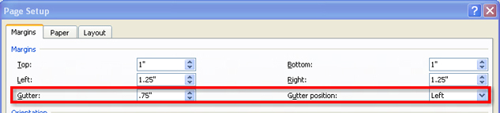

Project 3: Documents for Personal and Business Use
Reports
Reports are widely used documents in business and education. A report is an organized document used to communicate ideas and facts about a specific topic. There are different styles of reports, and the report’s purpose and intended audience will determine its length and format.
When you are writing a report, the first step is to create a plan:
- Define the purpose of the report.
- What is the topic?
- How long does the report have to be?
- What do you want your reader to know?
- When is it due?
- Determine the audience.
- How much experience or knowledge does the reader have of the topic?
- How much detail does your reader need in order to understand the topic?
- Is the audience internal or external to your organization?
- Determine ideas to be included to focus your research.
- Collect necessary material, information, and data.
- Organize the data into the main ideas and subtopics.
- Prepare an outline of headings and subheadings.
A report typically has three sections:
- The Front Matter
- Title Page
- Table of Contents
- The Report
- The introduction explains the purpose of the report.
- The body provides facts and details that support the main idea. (The body can be organized by headings or subheadings to make it easier for the reader to follow.)
- The conclusion summarizes the report and may provide recommendations.
- The introduction explains the purpose of the report.
- The End Matter
- Index
- Bibliography
You may encounter the following types of reports:
Informal reports give information, tell a story, or present an opinion.
Formal reports give information about the study of a particular topic and are written according to a specific style guide, such as:
- MLA (Modern Language Association)
- APA (American Psychological Association)
Bound reports include a .75" gutter on the left-hand side for binding the final publication. In Microsoft Word 2007, you can adjust the gutter setting by selecting the Page Layout tab on the ribbon, then, in the Page Setup group, clicking on Custom Margins in the Margins command.
Unbound reports require no extra gutter for binding.

Microsoft product screen shot(s) reprinted with permission from Microsoft Corporation.
Review the following examples of different reports and their formatting:
- Basic Reports for School or Business
- Reports for Humanities (English and Social Studies) Using MLA Style (most widely used for high school)
- Reports for Social Sciences (Psychology) Using APA Style
Study the following Example of a Basic Business Report to learn the basic format and structure of a report.
As you see in the examples, the reports look very different depending on which style of formatting is used. It is important to always check with your teacher as to his or her preferred style.
To learn more about researching, writing, and formatting reports, you can use the Internet to visit the online Writing Lab at Purdue University. Do an Internet search using the keywords “OWL Purdue.”